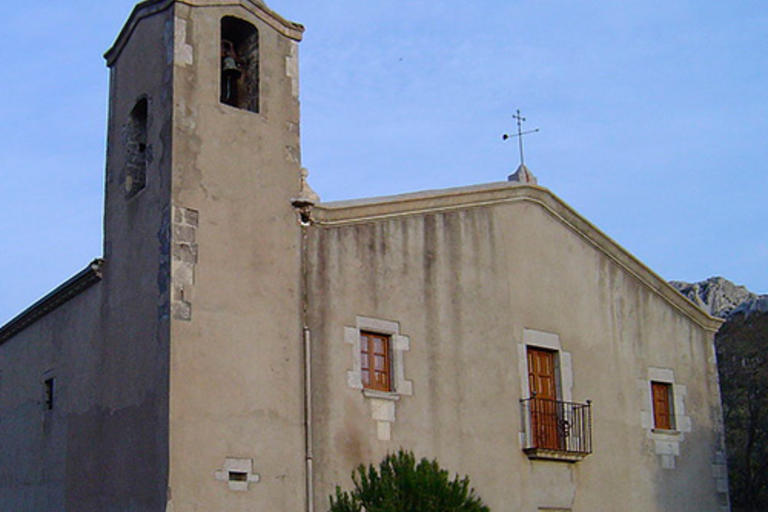

Visita · Montgrí
L'ermita de Santa Caterina és una ermita de dimensions moderades al terme municipal de Torroella de Montgrí. L'ermita queda amagada a l'interior de la vall de Santa Caterina al nord de les…